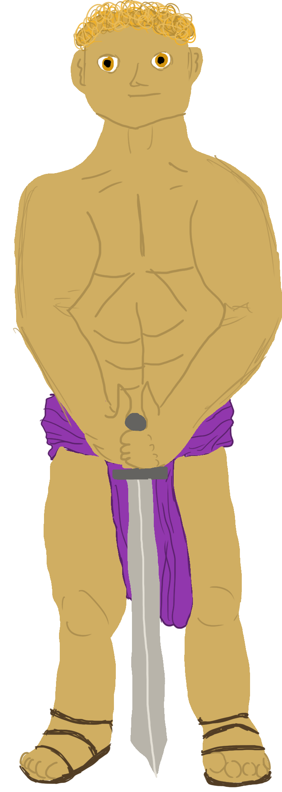

Hercules went on to finish his remaining eleven labors including journeying to Lerna to defeat the Lernaean Hydra, traveling to the Amazon to retrieve the Girdle of Hippolyta, and even going so far as to capturing the three-headed hound Cerberus. After completing his labors, the God of Healing, Medicine, and Archery relinquished Hercules from his guilt of killing his wife and children in a mysterious rage, and granted the demi-god with immortality.
Back to Start